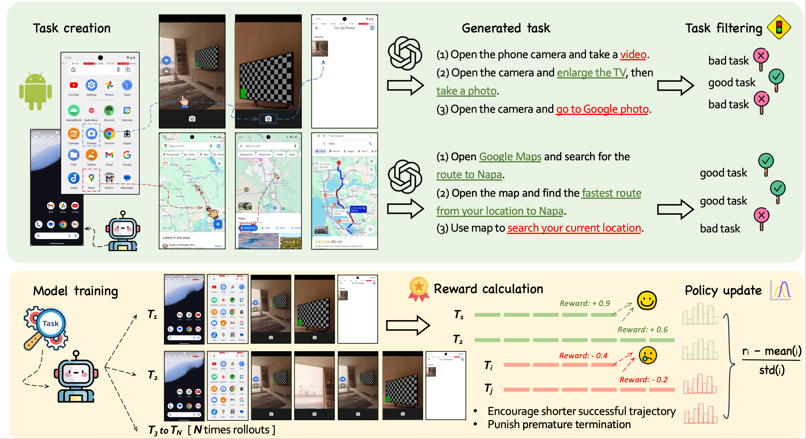
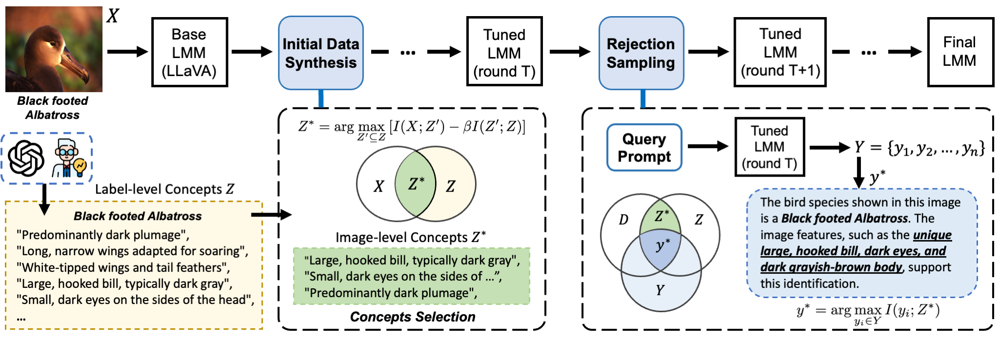
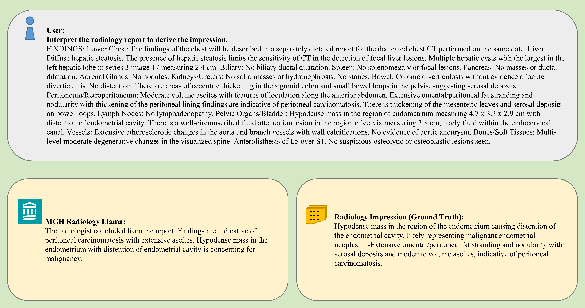
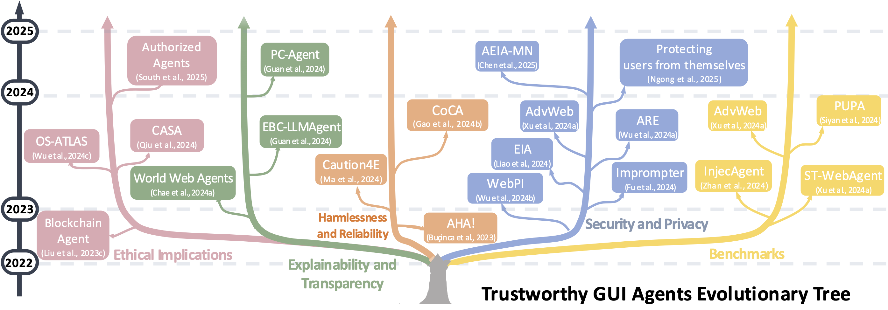
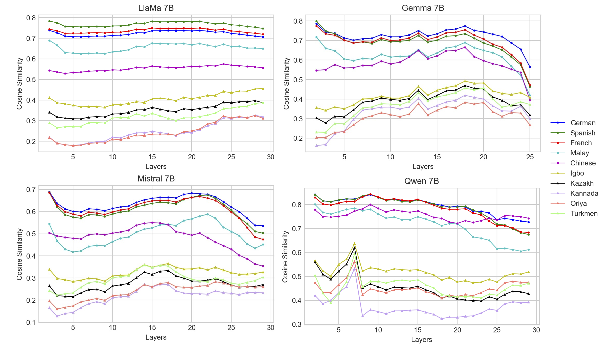
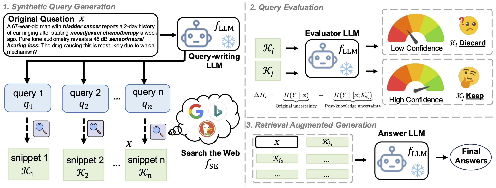
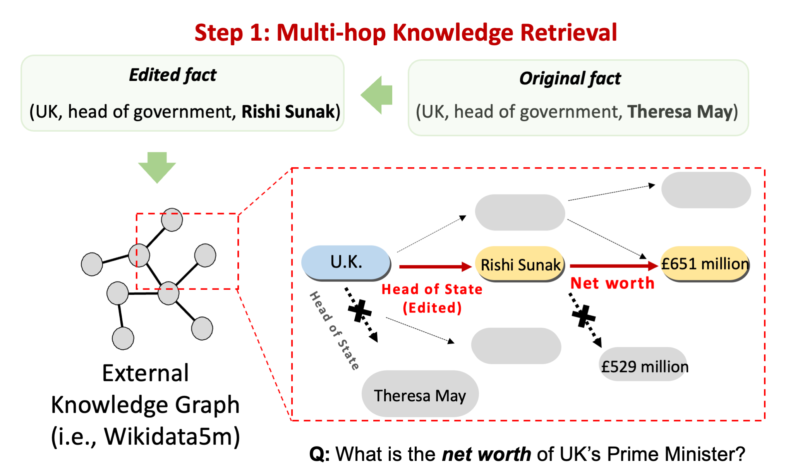
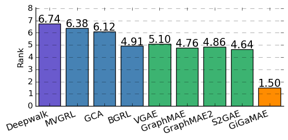

|
I am a fourth-year Ph.D. candidate at the University of Georgia, advised by Prof. Ninghao Liu. My research focuses on data-centric approaches and post-training techniques to improve the performance and reliability of Multimodal Language Models and Agentic AI systems. Research Highlights
I am actively seeking full-time Research Scientist or Applied Scientist roles starting December 2025. Let's connect if my work aligns with your team's goals! |

|
News
| 2025/05 - Starting my internship at Tencent AI Lab (Seattle), advised by Dr. Wenhao Yu. |
| 2025/05 - One paper accepted by ICML 2025. |
| 2025/04 - Check out our new survey on Trustworhty GUI agents and its Github Repo. |
| 2025/04 - I received Dissertation Completion Award Assistantship for 2025-2026! |
| 2025/03 - I passed my Comprehensive Exam! |
| 2025/01 - Three papers accepted by ICLR 2025. |
| 2024/11 - Our paper received Distinguished Paper Award from AMIA 2024. |
| 2024/07 - One paper accepted by CIKM 2024. |
| 2024/06 - Give one tutorial about XAI and its medical application on ICHI 2024. |
| 2024/05 - Starting my remote internship at Harvard Medical School, advised by Dr. Xiang Li. |
| 2023/09 - One paper accepted by NeurIPS 2023. |
| 2022/01 - I joined the DLGA lab at the University of Georgia as a research assistant. |
Research Experience
- Developing mobile GUI agents through online trajectory-based reinforcement learning
- Advancing multi-modal AI systems for mobile device automation and user interface understanding
- Implementing novel RL algorithms for improved human-computer interaction in mobile environments
- Developed MGH Radiology LLM by further pre-training LLaMA-70B on 6.5M+ radiology reports with DeepSpeed accelerators, achieving 93% improvement in ROUGE compared to original LLaMA model
- Proposed a RAG system that decomposes complex medical questions into search-engine-friendly synthetic queries for improved retrieval, enhancing LLaMA-8B's accuracy by 16% on MedMCQA dataset
- Published research on medical AI applications and knowledge retrieval systems
Selected Publications
|
*Equal contribution. |
Synthetic Data and Post-Training
|  |
(arXiv), 2025. [Paper] |
|  |
(ICLR), International Conference on Learning Representations, 2025. [Paper] [Code] [Model] |
|  |
(Preprints), Tech Report, 2024. [Paper] |
Trustworthy Foundation Models

|
(ICML), Forty-second International Conference on Machine Learning, 2025. [Paper] [Code] |

|
(NeurIPS), Conference on Neural Information Processing Systems, 2023. [Paper] [Code] |
|  |
(Preprints) [Paper] [Code] |
|  |
(AAAI), Association for the Advancement of Artificial Intelligence, 2025. [Paper] [Code] |

|
(Preprints) [Paper] [Code] |
Retrieval Augmented Generation
|  |
(arXiv), 2025. [Paper] |
|  |
(CIKM), ACM International Conference on Information and Knowledge Management, 2024. [Paper] [Code] [Slides] |

|
(AMIA), American Medical Informatics Association Annual Symposium, 2024. [Paper] [Code] [Distinguished Paper Award] |
Graph Self-supervised Learning
|  |
(CIKM), ACM International Conference on Information and Knowledge Management, 2023. [Paper] [Code] |

|
(ECML-PKDD), European Conference on Machine Learning and Principles and Practice of Knowledge Discovery in Databases, 2023. [Paper] [Code] |
Teaching
| Teaching Assistant of CSCI4380/6380 Data Mining and CSCI4370/6370 Database Management, University of Georgia, Spring 2024 |
| Teaching Assistant of CSCI4380/6380 Data Mining (Two Sessions), University of Georgia, Fall 2023 |
| Teaching Assistant of CSCI4380/6380 Data Mining, University of Georgia, Spring 2023 |
| Teaching Assistant of CSCI4360/6360 Data Science, University of Georgia, Fall 2022 |
Miscellaneous
Outside of research, I enjoy photography as a way to capture and appreciate life's small, beautiful moments. My camera helps me celebrate the everyday joys that surround us. My Flickr.